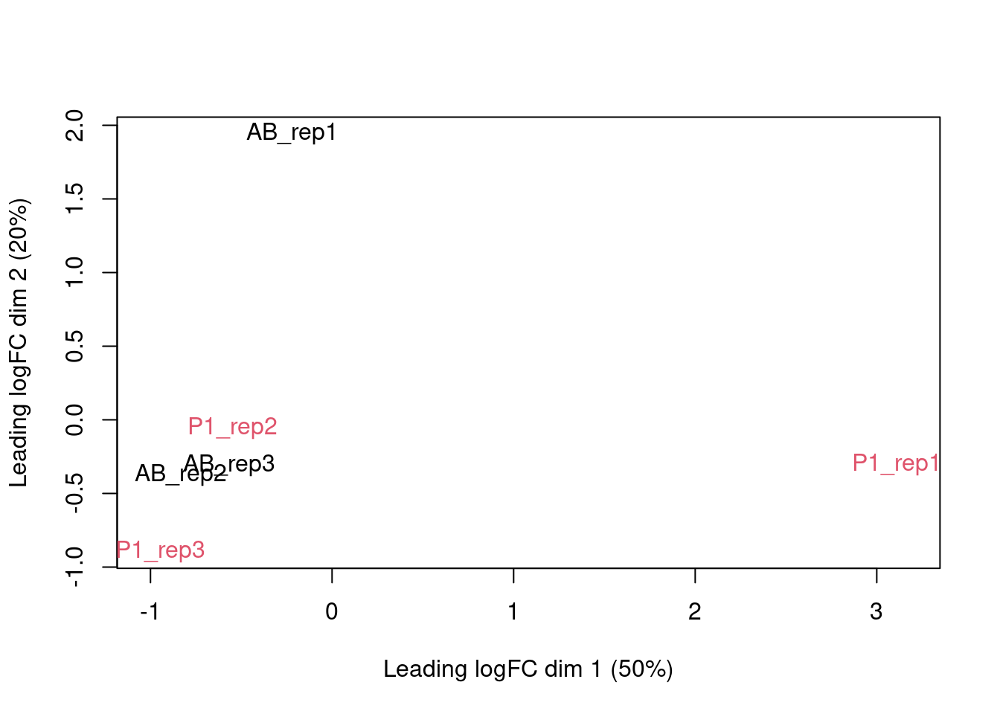
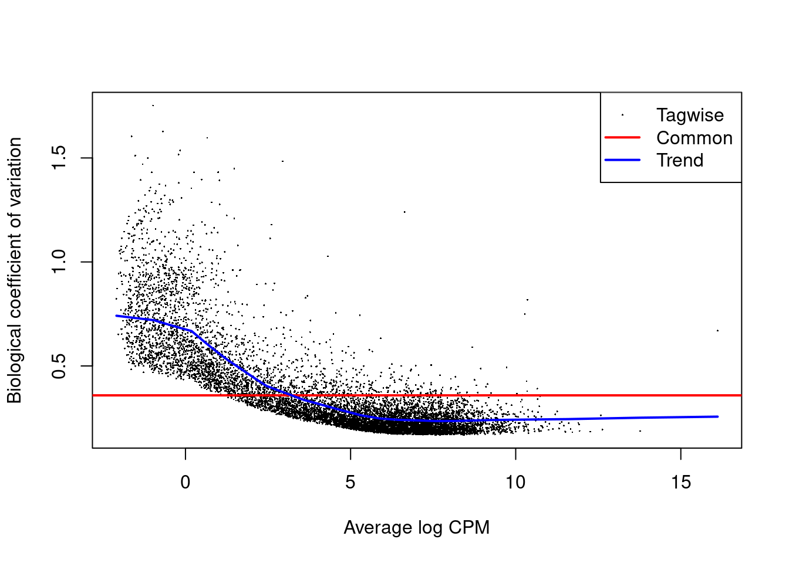
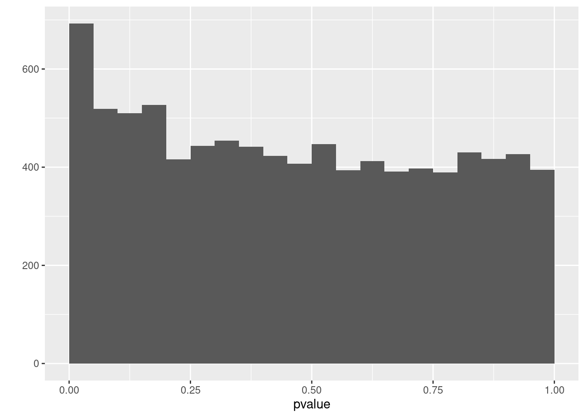
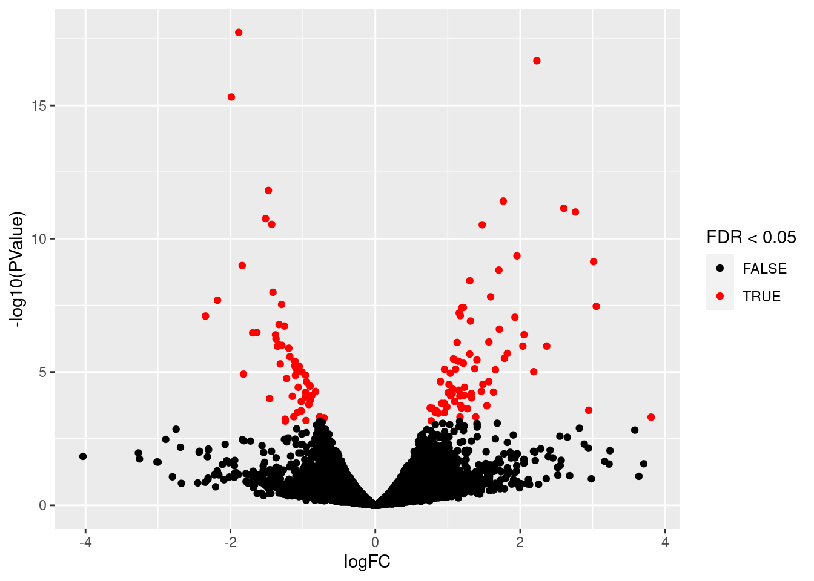
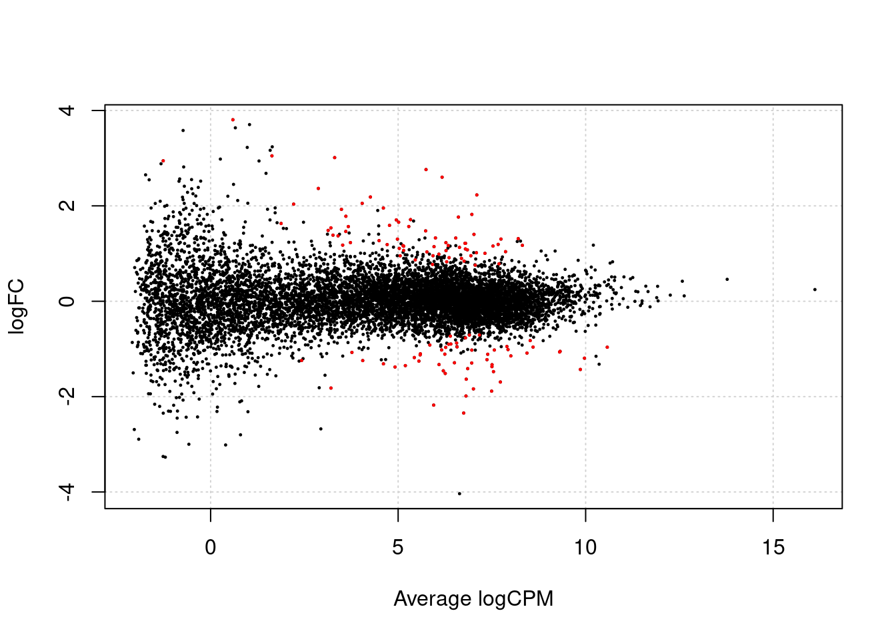
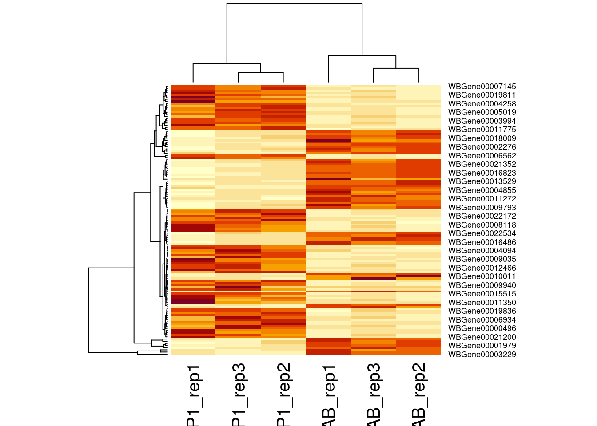

Background
After fertilization but prior to the onset of zygotic transcription,
the C. elegans zygote cleaves asymmetrically to create the anterior AB
and posterior P1 blastomeres, each of which goes on to generate distinct
cell lineages. To understand how patterns of RNA inheritance and
abundance arise after this first asymmetric cell division, we pooled
hand-dissected AB and P1 blastomeres and performed RNA-seq (Study GSE59943).
Read alignment and
Count table
We downloaded the SRA files, converted them to fastQ files and
aligned them using the Hisat2 mapper through the QuasR and RHisat2
package in the script elegansAlignmentCountTable
on the SGA course website.
Next, we import the count table derived from the full fastQ files for
the elegans experiment. The count table can be found on the elegansFastq
branch of the course website.
Note, that you can also work with the count table that you generated
using the small fastQ files that contained 2% of the reads of the full
fastQ files.
geneCounts <- read.csv("https://raw.githubusercontent.com/statOmics/SGA/elegansFastq/elegansCountTableFull.csv",row.names = 1)
head(geneCounts)
Note, that
The first column is the size of the gene.
The remaining columns are the count for each fastq
files.
The column names of the count columns are the names of the SRA
files, which can be used to link them to the experiment.
Differential
analysis
Preprocessing
Setup count object
edgeR
- First column of geneCounts is the size of the gene, so we will not
use it to setup the count object for edgeR.
suppressPackageStartupMessages({
library(edgeR)
})
dge <- DGEList(geneCounts[,-1])
cbind(pdata$Run,colnames(dge))
## [,1] [,2]
## [1,] "SRR1532959" "SRR1532959"
## [2,] "SRR1532960" "SRR1532960"
## [3,] "SRR1532961" "SRR1532961"
## [4,] "SRR1532962" "SRR1532962"
## [5,] "SRR1532963" "SRR1532963"
## [6,] "SRR1532964" "SRR1532964"
## [1] TRUE TRUE TRUE TRUE TRUE TRUE
The order of the samples in the metadata and count table is the
same
We replace the name of the SRA file with the title of the
experiment, which is more informative
colnames(dge) <- pdata$title
- The pdata contains many variables with long names. We extract rename
the relevant data and convert it into a factor.
pdata <- pdata %>%
dplyr::rename(cellType = `cell type:ch1`,
rep = `replicate:ch1`,
model = Model) %>%
mutate(
cellType = as.factor(cellType),
rep = as.factor(rep),
model = as.factor(model)
)
Filtering
We typically filter out lowly abundant genes. Note, that the
filtering is independent from the downstream analysis.
The main rationale is to keeps genes that have at least min.count
reads in a worthwhile number samples. The latter is derived from the
design matrix.
Indeed, genes with many zeros do not contain a lot of information and
the DE analysis is typically underpowered for these genes.
design <- model.matrix(~cellType, pdata)
keep <- filterByExpr(dge, design)
dge <- dge[keep, ,keep.lib.sizes=FALSE]
The option keep.lib.sizes=FALSE causes the library sizes to be
recomputed after the filtering. This is generally recommended, although
the effect on the downstream analysis is usually small.
Normalisation to
correct for differences in effective library size
The normalisation factors/offsets have to be calculated upon
filtering.
dge <- calcNormFactors(dge)
Data exploration
One way to reduce dimensionality is the use of multidimensional
scaling (MDS). For MDS, we first have to calculate all pairwise
distances between our objects (samples in this case), and then create a
(typically) two-dimensional representation where these pre-calculated
distances are represented as accurately as possible. This means that
depending on how the pairwise sample distances are defined, the
two-dimensional plot can be very different, and it is important to
choose a distance that is suitable for the type of data at hand.
edgeR contains a function plotMDS, which operates on a DGEList object
and generates a two-dimensional MDS representation of the samples. The
default distance between two samples can be interpreted as the “typical”
log fold change between the two samples, for the genes that are most
different between them (by default, the top 500 genes, but this can be
modified). We generate an MDS plot from the DGEList object dge, coloring
by the treatment and using different plot symbols for different cell
lines.
plotMDS(dge, top = 500, col=as.double(pdata$cellType))

The cell types of the same repeat seem to line up.
Modeling
Estimation of the
dispersion
We first estimate the overdispersion.
dge <- estimateDisp(dge, design)
plotBCV(dge)

Fitting and
inference
Finally, we fit the generalized linear model and perform the test. In
the glmLRT function, we indicate which coefficient (which column in the
design matrix) that we would like to test for. It is possible to test
more general contrasts as well, and the user guide contains many
examples on how to do this. The topTags function extracts the top-ranked
genes. You can indicate the adjusted p-value cutoff, and/or the number
of genes to keep.
Here we keep all genes in the toptable:
n = nrow(dge)
fit <- glmFit(dge, design)
lrt <- glmLRT(fit, coef = "cellTypeP1")
ttAll <-topTags(lrt, n = nrow(dge)) # all genes
Note, that the workflow with glmFit and glmLRT is no longer the
default workflow of edgeR. We will discuss this when we focus on the
technical aspects of differential analysis of RNASeq data.
Plots
P-values
We first assess the p-values.
qplot(ttAll$table$PValue,geom = "histogram", binwidth=.05,center=0.025) + xlab("pvalue")

Volcano and MA
plot
Next we make a volcano plot and an MA plot.
library(ggplot2)
volcano<- ggplot(
ttAll$table,
aes(x=logFC,y=-log10(PValue),
color=FDR<0.05)) +
geom_point() + scale_color_manual(values=c("black","red"))
volcano

plotSmear(lrt, de.tags = row.names(ttAll$table |> filter(FDR < 0.05)))

Heatmap
Another way of representing the results of a differential expression
analysis is to construct a heatmap of the top differentially expressed
genes. Here, we would expect the contrasted sample groups to cluster
separately. A heatmap is a “color coded expression matrix”, where the
rows and columns are clustered using hierarchical clustering. Typically,
it should not be applied to counts, but works better with transformed
values. Here we show how it can be applied to log CPM values.
sigNames <- row.names(ttAll$table |> filter(FDR < 0.05))
heatmap(cpm(dge)[sigNames, ])

List of significant
genes
ttAll$table |> filter(FDR < 0.05)
What did we forgot to
account for in the data analysis?
Assess the MDS plot and the first figure in the paper that published
the data (Osborne et all, 2013, DOI:
10.1371/journal.pgen.1005117).
knitr::include_graphics("https://europepmc.org/articles/PMC4395330/bin/pgen.1005117.g001.jpg")

Differential transcript abundance in AB and P1
blastomeres following the first embryonic division. (Source: Osborne et
all, 2013, DOI: 10.1371/journal.pgen.1005117)
Which source of variability is not included in the analysis and how
could we account for this? Try to adjust the script accordingly.
Session Info
With respect to reproducibility, it is highly recommended to include
a session info in your script so that readers of your output can see
your particular setup of R.
## R version 4.2.3 (2023-03-15)
## Platform: x86_64-pc-linux-gnu (64-bit)
## Running under: Ubuntu 22.04.4 LTS
##
## Matrix products: default
## BLAS: /usr/lib/x86_64-linux-gnu/openblas-pthread/libblas.so.3
## LAPACK: /usr/lib/x86_64-linux-gnu/openblas-pthread/libopenblasp-r0.3.20.so
##
## locale:
## [1] LC_CTYPE=C.UTF-8 LC_NUMERIC=C LC_TIME=C.UTF-8
## [4] LC_COLLATE=C.UTF-8 LC_MONETARY=C.UTF-8 LC_MESSAGES=C.UTF-8
## [7] LC_PAPER=C.UTF-8 LC_NAME=C LC_ADDRESS=C
## [10] LC_TELEPHONE=C LC_MEASUREMENT=C.UTF-8 LC_IDENTIFICATION=C
##
## attached base packages:
## [1] stats graphics grDevices datasets utils methods base
##
## other attached packages:
## [1] edgeR_3.38.4 limma_3.52.1 GEOquery_2.64.2
## [4] Biobase_2.56.0 BiocGenerics_0.42.0 R.utils_2.11.0
## [7] R.oo_1.24.0 R.methodsS3_1.8.1 forcats_0.5.1
## [10] stringr_1.4.1 dplyr_1.0.9 purrr_0.3.4
## [13] readr_2.1.2 tidyr_1.2.0 tibble_3.1.7
## [16] ggplot2_3.3.6 tidyverse_1.3.2
##
## loaded via a namespace (and not attached):
## [1] httr_1.4.3 sass_0.4.1 splines_4.2.3
## [4] jsonlite_1.8.0 modelr_0.1.8 bslib_0.3.1
## [7] assertthat_0.2.1 highr_0.9 BiocManager_1.30.18
## [10] renv_0.15.4 googlesheets4_1.0.0 cellranger_1.1.0
## [13] yaml_2.3.5 pillar_1.7.0 backports_1.4.1
## [16] lattice_0.20-45 glue_1.6.2 digest_0.6.29
## [19] rvest_1.0.2 colorspace_2.0-3 htmltools_0.5.2
## [22] pkgconfig_2.0.3 broom_0.8.0 haven_2.5.0
## [25] scales_1.2.0 tzdb_0.3.0 googledrive_2.0.0
## [28] farver_2.1.0 generics_0.1.2 ellipsis_0.3.2
## [31] withr_2.5.0 cli_3.3.0 magrittr_2.0.3
## [34] crayon_1.5.1 readxl_1.4.0 evaluate_0.16
## [37] fs_1.5.2 fansi_1.0.3 xml2_1.3.3
## [40] tools_4.2.3 data.table_1.14.2 hms_1.1.1
## [43] gargle_1.2.0 lifecycle_1.0.1 munsell_0.5.0
## [46] reprex_2.0.1 locfit_1.5-9.5 compiler_4.2.3
## [49] jquerylib_0.1.4 rlang_1.0.2 grid_4.2.3
## [52] labeling_0.4.2 rmarkdown_2.14 gtable_0.3.0
## [55] DBI_1.1.2 curl_4.3.2 R6_2.5.1
## [58] lubridate_1.8.0 knitr_1.40.1 fastmap_1.1.0
## [61] utf8_1.2.2 stringi_1.7.8 Rcpp_1.0.8.3
## [64] vctrs_0.4.1 dbplyr_2.1.1 tidyselect_1.1.2
## [67] xfun_0.33
LS0tCnRpdGxlOiAiRWxlZ2FuczogREUgYW5hbHlzaXMiCmF1dGhvcjogIkxpZXZlbiBDbGVtZW50IgpkYXRlOiAic3RhdE9taWNzLCBHaGVudCBVbml2ZXJzaXR5IChodHRwczovL3N0YXRvbWljcy5naXRodWIuaW8pIgpvdXRwdXQ6CiAgICBodG1sX2RvY3VtZW50OgogICAgICBjb2RlX2Rvd25sb2FkOiB0cnVlCiAgICAgIHRoZW1lOiBmbGF0bHkKICAgICAgdG9jOiB0cnVlCiAgICAgIHRvY19mbG9hdDogdHJ1ZQogICAgICBoaWdobGlnaHQ6IHRhbmdvCiAgICAgIG51bWJlcl9zZWN0aW9uczogdHJ1ZQpsaW5rY29sb3I6IGJsdWUKdXJsY29sb3I6IGJsdWUKY2l0ZWNvbG9yOiBibHVlCi0tLQoKYGBge3IsIGVjaG89RkFMU0V9CnN1cHByZXNzUGFja2FnZVN0YXJ0dXBNZXNzYWdlcyh7CiAgbGlicmFyeSh0aWR5dmVyc2UpCiAgbGlicmFyeShSLnV0aWxzKQp9KQpgYGAKIyBCYWNrZ3JvdW5kIAoKQWZ0ZXIgZmVydGlsaXphdGlvbiBidXQgcHJpb3IgdG8gdGhlIG9uc2V0IG9mIHp5Z290aWMgdHJhbnNjcmlwdGlvbiwgdGhlIEMuIGVsZWdhbnMgenlnb3RlIGNsZWF2ZXMgYXN5bW1ldHJpY2FsbHkgdG8gY3JlYXRlIHRoZSBhbnRlcmlvciBBQiBhbmQgcG9zdGVyaW9yIFAxIGJsYXN0b21lcmVzLCBlYWNoIG9mIHdoaWNoIGdvZXMgb24gdG8gZ2VuZXJhdGUgZGlzdGluY3QgY2VsbCBsaW5lYWdlcy4gVG8gdW5kZXJzdGFuZCBob3cgcGF0dGVybnMgb2YgUk5BIGluaGVyaXRhbmNlIGFuZCBhYnVuZGFuY2UgYXJpc2UgYWZ0ZXIgdGhpcyBmaXJzdCBhc3ltbWV0cmljIGNlbGwgZGl2aXNpb24sIHdlIHBvb2xlZCBoYW5kLWRpc3NlY3RlZCBBQiBhbmQgUDEgYmxhc3RvbWVyZXMgYW5kIHBlcmZvcm1lZCBSTkEtc2VxIChTdHVkeSBbR1NFNTk5NDNdKGh0dHBzOi8vd3d3Lm5jYmkubmxtLm5paC5nb3YvZ2VvL3F1ZXJ5L2FjYy5jZ2k/YWNjPUdTRTU5OTQzKSkuCgoKCiMjIFJlYWQgYWxpZ25tZW50IGFuZCBDb3VudCB0YWJsZQoKV2UgZG93bmxvYWRlZCB0aGUgU1JBIGZpbGVzLCBjb252ZXJ0ZWQgdGhlbSB0byBmYXN0USBmaWxlcyBhbmQgYWxpZ25lZCB0aGVtIHVzaW5nIHRoZSBIaXNhdDIgbWFwcGVyIHRocm91Z2ggdGhlIFF1YXNSIGFuZCBSSGlzYXQyIHBhY2thZ2UgaW4gdGhlIHNjcmlwdCBbZWxlZ2Fuc0FsaWdubWVudENvdW50VGFibGVdKC4vZWxlZ2Fuc0FsaWdubWVudENvdW50VGFibGUuaHRtbCkgb24gdGhlIFNHQSBjb3Vyc2Ugd2Vic2l0ZS4KCk5leHQsIHdlIGltcG9ydCB0aGUgY291bnQgdGFibGUgZGVyaXZlZCBmcm9tIHRoZSBmdWxsIGZhc3RRIGZpbGVzIGZvciB0aGUgZWxlZ2FucyBleHBlcmltZW50LiBUaGUgY291bnQgdGFibGUgY2FuIGJlIGZvdW5kIG9uIHRoZSBlbGVnYW5zRmFzdHEgYnJhbmNoIG9mIHRoZSBjb3Vyc2Ugd2Vic2l0ZS4gCgpOb3RlLCB0aGF0IHlvdSBjYW4gYWxzbyB3b3JrIHdpdGggdGhlIGNvdW50IHRhYmxlIHRoYXQgeW91IGdlbmVyYXRlZCB1c2luZyB0aGUgc21hbGwgZmFzdFEgZmlsZXMgdGhhdCBjb250YWluZWQgMiUgb2YgdGhlIHJlYWRzIG9mIHRoZSBmdWxsIGZhc3RRIGZpbGVzLiAKCmBgYHtyfQpnZW5lQ291bnRzIDwtIHJlYWQuY3N2KCJodHRwczovL3Jhdy5naXRodWJ1c2VyY29udGVudC5jb20vc3RhdE9taWNzL1NHQS9lbGVnYW5zRmFzdHEvZWxlZ2Fuc0NvdW50VGFibGVGdWxsLmNzdiIscm93Lm5hbWVzID0gMSkKaGVhZChnZW5lQ291bnRzKQpgYGAKCk5vdGUsIHRoYXQgCgotIFRoZSBmaXJzdCBjb2x1bW4gaXMgdGhlIHNpemUgb2YgdGhlIGdlbmUuIAoKLSBUaGUgcmVtYWluaW5nIGNvbHVtbnMgYXJlIHRoZSBjb3VudCBmb3IgZWFjaCBmYXN0cSBmaWxlcy4KCi0gVGhlIGNvbHVtbiBuYW1lcyBvZiB0aGUgY291bnQgY29sdW1ucyBhcmUgdGhlIG5hbWVzIG9mIHRoZSBTUkEgZmlsZXMsIHdoaWNoIGNhbiBiZSB1c2VkIHRvIGxpbmsgdGhlbSB0byB0aGUgZXhwZXJpbWVudC4gIAoKIyMgTWV0YSBEYXRhCgpUaGUgaW5mb3JtYXRpb24gd2hpY2ggY29ubmVjdHMgdGhlIHNhbXBsZSBpbmZvcm1hdGlvbiBmcm9tIEdFTyB3aXRoIHRoZSBTUkEgcnVuIGlkIGlzIGRvd25sb2FkZWQgZnJvbSBbU1JBXShodHRwczovL3d3dy5uY2JpLm5sbS5uaWguZ292L3NyYT90ZXJtPVNSUDA0NTExMCkgdXNpbmcgdGhlIFNlbmQgdG86IEZpbGUgYnV0dG9uLgoKIVtdKGh0dHBzOi8vcmF3LmdpdGh1YnVzZXJjb250ZW50LmNvbS9zdGF0T21pY3MvU0dBL21hc3Rlci9pbWFnZXNfc2VxdWVuY2luZy9lbGVnYW5zX0dTRTU5OTQzLnBuZykKCkRvd25sb2FkIFNSQSBpbmZvIHRvIGxpbmsgc2FtcGxlIGluZm8gdG8gaW5mbyBzZXF1ZW5jaW5nOiAKCjEuIEdvIHRvIGNvcnJlc3BvbmRpbmcgW1NSQV0oaHR0cHM6Ly93d3cubmNiaS5ubG0ubmloLmdvdi9zcmE/dGVybT1TUlAwNDUxMTApIHBhZ2UgYW5kIHNhdmUgdGhlIGluZm9ybWF0aW9uIHZpYSB0aGUgIlNlbmQgdG86IEZpbGUgYnV0dG9uIi4gCgoyLiBTZWxlY3QgUnVuSW5mbyEgCgohW10oaHR0cHM6Ly9yYXcuZ2l0aHVidXNlcmNvbnRlbnQuY29tL3N0YXRPbWljcy9TR0EvbWFzdGVyL2ltYWdlc19zZXF1ZW5jaW5nL2VsZWdhbnNfc3JhSW5mby5wbmcpCk5vdGUsIHRoYXQgdGhpcyBmaWxlIGlzIGFscmVhZHkgaW5jbHVkZWQgb24gdGhlIGVsZWdhbnNGYXN0cSBicmFuY2ggb2YgdGhlIGNvdXJzZSBnaXRodWIgc2l0ZS4gCgpgYGB7cn0Kc3JhSW5mbyA8LSByZWFkLmNzdigiaHR0cHM6Ly9yYXcuZ2l0aHVidXNlcmNvbnRlbnQuY29tL3N0YXRPbWljcy9TR0EvZWxlZ2Fuc0Zhc3RxL1NyYVJ1bkluZm8uY3N2IikKYGBgCgoKIyMjIFJlYWQgYmFja2dyb3VuZCBleHBlcmltZW50CgpWaWEgdGhlIEdFT3F1ZXJ5IHBhY2thZ2Ugd2UgY2FuIGFjY2VzcyB0aGUgbWV0YSBkYXRhIGZyb20gZXhwZXJpbWVudHMgdGhhdCBhcmUgZGVwb3NpdGVkIHRvIEdFTy4gCgpgYGB7cn0Kc3VwcHJlc3NQYWNrYWdlU3RhcnR1cE1lc3NhZ2VzKHsKICAgIGxpYnJhcnkoICJHRU9xdWVyeSIgKQogICAgfSkKZ3NlIDwtIGdldEdFTygiR1NFNTk5NDMiKQpsZW5ndGgoZ3NlKQpgYGAKClRoZXJlIGFyZSB0d28gb2JqZWN0cyBiZWNhdXNlIHRoZXJlIHdlcmUgcnVucyB3aXRoIHR3byBkaWZmZXJlbnQgbWFjaGluZXMuIApDb21iaW5lIHRoZSBkYXRhIGZyb20gYm90aCBmaWxlcyBhbmQgYWRkIHNhbXBsZSBuYW1lIGNvbHVtbiBpbiBvcmRlciB0byBiZSBhYmxlIHRvIGxpbmsgdGhlIGluZm8gdG8gdGhhdCBmcm9tIFNSQSBuYW1lcyBpbiB0aGUgY291bnQgdGFibGUuCgpgYGB7cn0KcGRhdGEgPC0gcmJpbmQocERhdGEoZ3NlW1sxXV0pLHBEYXRhKGdzZVtbMl1dKSkKcGRhdGEkU2FtcGxlTmFtZSA8LSByb3duYW1lcyhwZGF0YSkKYGBgCgojIyMgQ29tYmluZSBleHBlcmltZW50IG1ldGFkYXRhIHdpdGggbWV0YWRhdGEgb24gdGhlIFNSQSBzZXF1ZW5jaW5nIGZpbGVzCgpUaGUgU2FtcGxlTmFtZSBjb2x1bW4gdGhhdCB3ZSBtYWRlIGluIHRoZSBwZGF0YSBvYmplY3QgY2FuIGJlIHVzZWQgdG8gY29tYmluZSB0aGUgbWV0YWRhdGEgZnJvbSBTUkEgZmlsZXMgdG8gdGhhdCBvZiBHRU8gZXhwZXJpbWVudCBkYXRhLiAKCmBgYHtyfQpzcmFJbmZvJFNhbXBsZU5hbWUKcGRhdGEkU2FtcGxlTmFtZQpgYGAKClRoZSBvcmRlciBpcyBkaWZmZXJlbnQsIGJ1dCB3ZSBjYW4gdXNlIG1lcmdlIHRvIGNvbWJpbmUgdGhlbSBjb3JyZWN0bHkuIAoKYGBge3J9CnBkYXRhIDwtIG1lcmdlKHBkYXRhLHNyYUluZm8sYnk9IlNhbXBsZU5hbWUiKQpgYGAKClRoZSBydW4gaXMgYWxzbyB0aGUgbmFtZSBvZiB0aGUgU1JBIGZpbGUgc28gd2Ugd2lsbCBiZSBhYmxlIHRvIGxpbmsgYWxpZ25tZW50IGZpbGUgbmFtZSB0byB0aGUgZXhwZXJpbWVudCB2aWEgdGhlIFNSQSBmaWxlIGluZm8uCgojIERpZmZlcmVudGlhbCBhbmFseXNpcwoKIyMgUHJlcHJvY2Vzc2luZyAKCiMjIyBTZXR1cCBjb3VudCBvYmplY3QgZWRnZVIKCi0gRmlyc3QgY29sdW1uIG9mIGdlbmVDb3VudHMgaXMgdGhlIHNpemUgb2YgdGhlIGdlbmUsIHNvIHdlIHdpbGwgbm90IHVzZSBpdCB0byBzZXR1cCB0aGUgY291bnQgb2JqZWN0IGZvciBlZGdlUi4gCgpgYGB7cn0Kc3VwcHJlc3NQYWNrYWdlU3RhcnR1cE1lc3NhZ2VzKHsKICAgIGxpYnJhcnkoZWRnZVIpCn0pCmRnZSA8LSBER0VMaXN0KGdlbmVDb3VudHNbLC0xXSkKYGBgCgpgYGB7cn0KY2JpbmQocGRhdGEkUnVuLGNvbG5hbWVzKGRnZSkpCmBgYAoKYGBge3J9CnBkYXRhJFJ1bj09Y29sbmFtZXMoZGdlKQpgYGAKCi0gVGhlIG9yZGVyIG9mIHRoZSBzYW1wbGVzIGluIHRoZSBtZXRhZGF0YSBhbmQgY291bnQgdGFibGUgaXMgdGhlIHNhbWUKCi0gV2UgcmVwbGFjZSB0aGUgbmFtZSBvZiB0aGUgU1JBIGZpbGUgd2l0aCB0aGUgdGl0bGUgb2YgdGhlIGV4cGVyaW1lbnQsIHdoaWNoIGlzIG1vcmUgaW5mb3JtYXRpdmUKCmBgYHtyfQpjb2xuYW1lcyhkZ2UpIDwtIHBkYXRhJHRpdGxlCmBgYAoKLSBUaGUgcGRhdGEgY29udGFpbnMgbWFueSB2YXJpYWJsZXMgd2l0aCBsb25nIG5hbWVzLiBXZSBleHRyYWN0IHJlbmFtZSB0aGUgcmVsZXZhbnQgZGF0YSBhbmQgY29udmVydCBpdCBpbnRvIGEgZmFjdG9yLgoKYGBge3J9CnBkYXRhIDwtIHBkYXRhICU+JSAKICBkcGx5cjo6cmVuYW1lKGNlbGxUeXBlID0gYGNlbGwgdHlwZTpjaDFgLAogICAgICAgICAgICAgICAgcmVwID0gYHJlcGxpY2F0ZTpjaDFgLCAKICAgICAgICAgICAgICAgIG1vZGVsID0gTW9kZWwpICU+JSAKICBtdXRhdGUoCiAgICAgICAgY2VsbFR5cGUgPSBhcy5mYWN0b3IoY2VsbFR5cGUpLAogICAgICAgIHJlcCA9IGFzLmZhY3RvcihyZXApLCAKICAgICAgICBtb2RlbCA9IGFzLmZhY3Rvcihtb2RlbCkKICAgICAgICApCmBgYAoKCiMjIyBGaWx0ZXJpbmcKCldlIHR5cGljYWxseSBmaWx0ZXIgb3V0IGxvd2x5IGFidW5kYW50IGdlbmVzLiAKTm90ZSwgdGhhdCB0aGUgZmlsdGVyaW5nIGlzIGluZGVwZW5kZW50IGZyb20gdGhlIGRvd25zdHJlYW0gYW5hbHlzaXMuIAoKVGhlIG1haW4gcmF0aW9uYWxlIGlzIHRvIGtlZXBzIGdlbmVzIHRoYXQgaGF2ZSBhdCBsZWFzdCBtaW4uY291bnQgcmVhZHMgaW4gYSB3b3J0aHdoaWxlIG51bWJlciBzYW1wbGVzLiBUaGUgbGF0dGVyIGlzIGRlcml2ZWQgZnJvbSB0aGUgZGVzaWduIG1hdHJpeC4gCgpJbmRlZWQsIGdlbmVzIHdpdGggbWFueSB6ZXJvcyBkbyBub3QgY29udGFpbiBhIGxvdCBvZiBpbmZvcm1hdGlvbiBhbmQgdGhlIERFIGFuYWx5c2lzIGlzIHR5cGljYWxseSB1bmRlcnBvd2VyZWQgZm9yIHRoZXNlIGdlbmVzLiAKCmBgYHtyfQpkZXNpZ24gPC0gbW9kZWwubWF0cml4KH5jZWxsVHlwZSwgcGRhdGEpCmtlZXAgPC0gZmlsdGVyQnlFeHByKGRnZSwgZGVzaWduKQpkZ2UgPC0gZGdlW2tlZXAsICxrZWVwLmxpYi5zaXplcz1GQUxTRV0KYGBgCgpUaGUgb3B0aW9uIGtlZXAubGliLnNpemVzPUZBTFNFIGNhdXNlcyB0aGUgbGlicmFyeSBzaXplcyB0byBiZSByZWNvbXB1dGVkIGFmdGVyIHRoZSBmaWx0ZXJpbmcuIFRoaXMgaXMgZ2VuZXJhbGx5IHJlY29tbWVuZGVkLCBhbHRob3VnaCB0aGUgZWZmZWN0IG9uIHRoZSBkb3duc3RyZWFtIGFuYWx5c2lzIGlzIHVzdWFsbHkgc21hbGwuCgojIyMgTm9ybWFsaXNhdGlvbiB0byBjb3JyZWN0IGZvciBkaWZmZXJlbmNlcyBpbiBlZmZlY3RpdmUgbGlicmFyeSBzaXplCgpUaGUgbm9ybWFsaXNhdGlvbiBmYWN0b3JzL29mZnNldHMgaGF2ZSB0byBiZSBjYWxjdWxhdGVkIHVwb24gZmlsdGVyaW5nLgoKYGBge3J9CmRnZSA8LSBjYWxjTm9ybUZhY3RvcnMoZGdlKQpgYGAKCiMjIERhdGEgZXhwbG9yYXRpb24gCgpPbmUgd2F5IHRvIHJlZHVjZSBkaW1lbnNpb25hbGl0eSBpcyB0aGUgdXNlIG9mIG11bHRpZGltZW5zaW9uYWwgc2NhbGluZyAoTURTKS4gRm9yIE1EUywgd2UgZmlyc3QgaGF2ZSB0byBjYWxjdWxhdGUgYWxsIHBhaXJ3aXNlIGRpc3RhbmNlcyBiZXR3ZWVuIG91ciBvYmplY3RzIChzYW1wbGVzIGluIHRoaXMgY2FzZSksIGFuZCB0aGVuIGNyZWF0ZSBhICh0eXBpY2FsbHkpIHR3by1kaW1lbnNpb25hbCByZXByZXNlbnRhdGlvbiB3aGVyZSB0aGVzZSBwcmUtY2FsY3VsYXRlZCBkaXN0YW5jZXMgYXJlIHJlcHJlc2VudGVkIGFzIGFjY3VyYXRlbHkgYXMgcG9zc2libGUuIFRoaXMgbWVhbnMgdGhhdCBkZXBlbmRpbmcgb24gaG93IHRoZSBwYWlyd2lzZSBzYW1wbGUgZGlzdGFuY2VzIGFyZSBkZWZpbmVkLCB0aGUgdHdvLWRpbWVuc2lvbmFsIHBsb3QgY2FuIGJlIHZlcnkgZGlmZmVyZW50LCBhbmQgaXQgaXMgaW1wb3J0YW50IHRvIGNob29zZSBhIGRpc3RhbmNlIHRoYXQgaXMgc3VpdGFibGUgZm9yIHRoZSB0eXBlIG9mIGRhdGEgYXQgaGFuZC4KCmVkZ2VSIGNvbnRhaW5zIGEgZnVuY3Rpb24gcGxvdE1EUywgd2hpY2ggb3BlcmF0ZXMgb24gYSBER0VMaXN0IG9iamVjdCBhbmQgZ2VuZXJhdGVzIGEgdHdvLWRpbWVuc2lvbmFsIE1EUyByZXByZXNlbnRhdGlvbiBvZiB0aGUgc2FtcGxlcy4gVGhlIGRlZmF1bHQgZGlzdGFuY2UgYmV0d2VlbiB0d28gc2FtcGxlcyBjYW4gYmUgaW50ZXJwcmV0ZWQgYXMgdGhlICJ0eXBpY2FsIiBsb2cgZm9sZCBjaGFuZ2UgYmV0d2VlbiB0aGUgdHdvIHNhbXBsZXMsIGZvciB0aGUgZ2VuZXMgdGhhdCBhcmUgbW9zdCBkaWZmZXJlbnQgYmV0d2VlbiB0aGVtIChieSBkZWZhdWx0LCB0aGUgdG9wIDUwMCBnZW5lcywgYnV0IHRoaXMgY2FuIGJlIG1vZGlmaWVkKS4gV2UgZ2VuZXJhdGUgYW4gTURTIHBsb3QgZnJvbSB0aGUgREdFTGlzdCBvYmplY3QgZGdlLCBjb2xvcmluZyBieSB0aGUgdHJlYXRtZW50IGFuZCB1c2luZyBkaWZmZXJlbnQgcGxvdCBzeW1ib2xzIGZvciBkaWZmZXJlbnQgY2VsbCBsaW5lcy4KCmBgYHtyfQpwbG90TURTKGRnZSwgdG9wID0gNTAwLCBjb2w9YXMuZG91YmxlKHBkYXRhJGNlbGxUeXBlKSkKYGBgCgpUaGUgY2VsbCB0eXBlcyBvZiB0aGUgc2FtZSByZXBlYXQgc2VlbSB0byBsaW5lIHVwLiAKCiMjIE1vZGVsaW5nCgojIyMgRXN0aW1hdGlvbiBvZiB0aGUgZGlzcGVyc2lvbgoKV2UgZmlyc3QgZXN0aW1hdGUgdGhlIG92ZXJkaXNwZXJzaW9uLiAKCmBgYHtyfQpkZ2UgPC0gZXN0aW1hdGVEaXNwKGRnZSwgZGVzaWduKQpwbG90QkNWKGRnZSkKYGBgCgojIyMgRml0dGluZyBhbmQgaW5mZXJlbmNlIAoKRmluYWxseSwgd2UgZml0IHRoZSBnZW5lcmFsaXplZCBsaW5lYXIgbW9kZWwgYW5kIHBlcmZvcm0gdGhlIHRlc3QuIEluIHRoZSBnbG1MUlQgZnVuY3Rpb24sIHdlIGluZGljYXRlIHdoaWNoIGNvZWZmaWNpZW50ICh3aGljaCBjb2x1bW4gaW4gdGhlIGRlc2lnbiBtYXRyaXgpIHRoYXQgd2Ugd291bGQgbGlrZSB0byB0ZXN0IGZvci4gSXQgaXMgcG9zc2libGUgdG8gdGVzdCBtb3JlIGdlbmVyYWwgY29udHJhc3RzIGFzIHdlbGwsIGFuZCB0aGUgdXNlciBndWlkZSBjb250YWlucyBtYW55IGV4YW1wbGVzIG9uIGhvdyB0byBkbyB0aGlzLiBUaGUgdG9wVGFncyBmdW5jdGlvbiBleHRyYWN0cyB0aGUgdG9wLXJhbmtlZCBnZW5lcy4gWW91IGNhbiBpbmRpY2F0ZSB0aGUgYWRqdXN0ZWQgcC12YWx1ZSBjdXRvZmYsIGFuZC9vciB0aGUgbnVtYmVyIG9mIGdlbmVzIHRvIGtlZXAuCgpIZXJlIHdlIGtlZXAgYWxsIGdlbmVzIGluIHRoZSB0b3B0YWJsZTogYG4gPSBucm93KGRnZSlgCgpgYGB7cn0KZml0IDwtIGdsbUZpdChkZ2UsIGRlc2lnbikKbHJ0IDwtIGdsbUxSVChmaXQsIGNvZWYgPSAiY2VsbFR5cGVQMSIpCnR0QWxsIDwtdG9wVGFncyhscnQsIG4gPSBucm93KGRnZSkpICMgYWxsIGdlbmVzCmBgYAoKTm90ZSwgdGhhdCB0aGUgd29ya2Zsb3cgd2l0aCBnbG1GaXQgYW5kIGdsbUxSVCBpcyBubyBsb25nZXIgdGhlIGRlZmF1bHQgd29ya2Zsb3cgb2YgZWRnZVIuIFdlIHdpbGwgZGlzY3VzcyB0aGlzIHdoZW4gd2UgZm9jdXMgb24gdGhlIHRlY2huaWNhbCBhc3BlY3RzIG9mIGRpZmZlcmVudGlhbCBhbmFseXNpcyBvZiBSTkFTZXEgZGF0YS4KCiMjIFBsb3RzCgojIyMgUC12YWx1ZXMKCldlIGZpcnN0IGFzc2VzcyB0aGUgcC12YWx1ZXMuIAoKYGBge3J9CnFwbG90KHR0QWxsJHRhYmxlJFBWYWx1ZSxnZW9tID0gImhpc3RvZ3JhbSIsIGJpbndpZHRoPS4wNSxjZW50ZXI9MC4wMjUpICsgeGxhYigicHZhbHVlIikKYGBgCgojIyMgVm9sY2FubyBhbmQgTUEgcGxvdAoKTmV4dCB3ZSBtYWtlIGEgdm9sY2FubyBwbG90IGFuZCBhbiBNQSBwbG90LgoKYGBge3J9CmxpYnJhcnkoZ2dwbG90MikKdm9sY2FubzwtIGdncGxvdCgKICAgIHR0QWxsJHRhYmxlLAogICAgYWVzKHg9bG9nRkMseT0tbG9nMTAoUFZhbHVlKSwKICAgIGNvbG9yPUZEUjwwLjA1KSkgKyAKICAgIGdlb21fcG9pbnQoKSArIHNjYWxlX2NvbG9yX21hbnVhbCh2YWx1ZXM9YygiYmxhY2siLCJyZWQiKSkKdm9sY2FubwpgYGAKCmBgYHtyfQpwbG90U21lYXIobHJ0LCBkZS50YWdzID0gcm93Lm5hbWVzKHR0QWxsJHRhYmxlIHw+IGZpbHRlcihGRFIgPCAwLjA1KSkpCmBgYAoKIyMjIEhlYXRtYXAgCgpBbm90aGVyIHdheSBvZiByZXByZXNlbnRpbmcgdGhlIHJlc3VsdHMgb2YgYSBkaWZmZXJlbnRpYWwgZXhwcmVzc2lvbiBhbmFseXNpcyBpcyB0byBjb25zdHJ1Y3QgYSBoZWF0bWFwIG9mIHRoZSB0b3AgZGlmZmVyZW50aWFsbHkgZXhwcmVzc2VkIGdlbmVzLiBIZXJlLCB3ZSB3b3VsZCBleHBlY3QgdGhlIGNvbnRyYXN0ZWQgc2FtcGxlIGdyb3VwcyB0byBjbHVzdGVyIHNlcGFyYXRlbHkuIEEgaGVhdG1hcCBpcyBhICJjb2xvciBjb2RlZCBleHByZXNzaW9uIG1hdHJpeCIsIHdoZXJlIHRoZSByb3dzIGFuZCBjb2x1bW5zIGFyZSBjbHVzdGVyZWQgdXNpbmcgaGllcmFyY2hpY2FsIGNsdXN0ZXJpbmcuIFR5cGljYWxseSwgaXQgc2hvdWxkIG5vdCBiZSBhcHBsaWVkIHRvIGNvdW50cywgYnV0IHdvcmtzIGJldHRlciB3aXRoIHRyYW5zZm9ybWVkIHZhbHVlcy4gSGVyZSB3ZSBzaG93IGhvdyBpdCBjYW4gYmUgYXBwbGllZCB0byBsb2cgQ1BNIHZhbHVlcy4gCgpgYGB7cn0Kc2lnTmFtZXMgPC0gcm93Lm5hbWVzKHR0QWxsJHRhYmxlIHw+IGZpbHRlcihGRFIgPCAwLjA1KSkKaGVhdG1hcChjcG0oZGdlKVtzaWdOYW1lcywgXSkKYGBgCgoKIyMgTGlzdCBvZiBzaWduaWZpY2FudCBnZW5lcwoKYGBge3J9CnR0QWxsJHRhYmxlIHw+IGZpbHRlcihGRFIgPCAwLjA1KQpgYGAKCiMjIFdoYXQgZGlkIHdlIGZvcmdvdCB0byBhY2NvdW50IGZvciBpbiB0aGUgZGF0YSBhbmFseXNpcz8KCkFzc2VzcyB0aGUgTURTIHBsb3QgYW5kIHRoZSBmaXJzdCBmaWd1cmUgaW4gdGhlIHBhcGVyIHRoYXQgcHVibGlzaGVkIHRoZSBkYXRhIChPc2Jvcm5lIGV0IGFsbCwgMjAxMywgW0RPSTogMTAuMTM3MS9qb3VybmFsLnBnZW4uMTAwNTExN10oaHR0cHM6Ly9kb2kub3JnLzEwLjEzNzEvam91cm5hbC5wZ2VuLjEwMDUxMTcpKS4KCmBgYHtyIGZpZy5jYXA9J0RpZmZlcmVudGlhbCB0cmFuc2NyaXB0IGFidW5kYW5jZSBpbiBBQiBhbmQgUDEgYmxhc3RvbWVyZXMgZm9sbG93aW5nIHRoZSBmaXJzdCBlbWJyeW9uaWMgZGl2aXNpb24uIChTb3VyY2U6IE9zYm9ybmUgZXQgYWxsLCAyMDEzLCBET0k6IDEwLjEzNzEvam91cm5hbC5wZ2VuLjEwMDUxMTcpJ30Ka25pdHI6OmluY2x1ZGVfZ3JhcGhpY3MoImh0dHBzOi8vZXVyb3BlcG1jLm9yZy9hcnRpY2xlcy9QTUM0Mzk1MzMwL2Jpbi9wZ2VuLjEwMDUxMTcuZzAwMS5qcGciKQpgYGAKCgpXaGljaCBzb3VyY2Ugb2YgdmFyaWFiaWxpdHkgaXMgbm90IGluY2x1ZGVkIGluIHRoZSBhbmFseXNpcyBhbmQgaG93IGNvdWxkIHdlIGFjY291bnQgZm9yIHRoaXM/IFRyeSB0byBhZGp1c3QgdGhlIHNjcmlwdCBhY2NvcmRpbmdseS4KCiMgU2Vzc2lvbiBJbmZvCgpXaXRoIHJlc3BlY3QgdG8gcmVwcm9kdWNpYmlsaXR5LCBpdCBpcyBoaWdobHkgcmVjb21tZW5kZWQgdG8gaW5jbHVkZSBhIHNlc3Npb24gaW5mbyBpbiB5b3VyIHNjcmlwdCBzbyB0aGF0IHJlYWRlcnMgb2YgeW91ciBvdXRwdXQgY2FuIHNlZSB5b3VyIHBhcnRpY3VsYXIgc2V0dXAgb2YgUi4gCgpgYGB7cn0Kc2Vzc2lvbkluZm8oKQpgYGAKCg==

 Note, that this file is already included on the elegansFastq branch of
the course github site.
Note, that this file is already included on the elegansFastq branch of
the course github site.